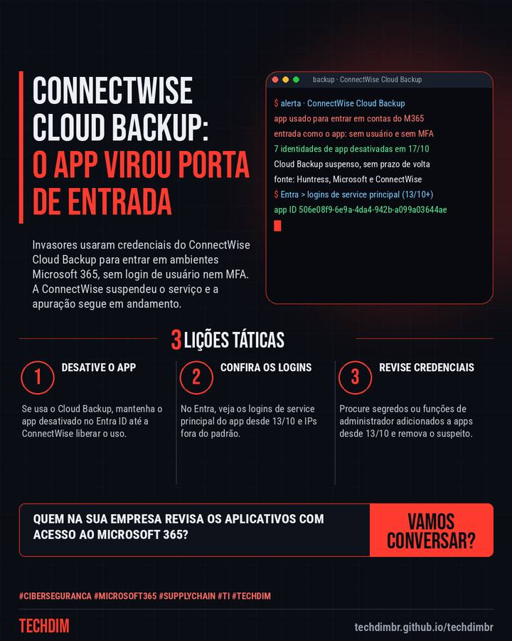

Alerta de segurança
ConnectWise Cloud Backup suspenso após invasão a ambientes Microsoft 365 de clientes
Invasores usaram credenciais do ConnectWise Cloud Backup para entrar em ambientes Microsoft 365, sem login de usuário nem MFA. A ConnectWise suspendeu o serviço e a apuração segue em andamento.

O que aconteceu
- A ConnectWise suspendeu o Cloud Backup (antigo SkyKick) após invasores usarem credenciais do aplicativo para entrar em ambientes Microsoft 365 de clientes e parceiros
- Entraram como o próprio app, sem login de usuário e sem MFA. A Huntress confirmou mais de 160 ambientes. A ConnectWise não vê indício de acesso aos backups
- Se usa o Cloud Backup, direto ou via fornecedor de TI, mantenha o app desativado no Entra ID e confira os logins do aplicativo e as credenciais novas desde 13/10
Seu backup do Microsoft 365 passa por um fornecedor? Peça à TI para conferir os logins do aplicativo e as credenciais adicionadas.
Por que importa
Ataque à cadeia de suprimentos de um serviço de backup usado por provedores de TI, com passos práticos de verificação no Microsoft Entra para empresas e prestadores.
Como se proteger
- Desative o app. Se usa o Cloud Backup, mantenha o app desativado no Entra ID até a ConnectWise liberar o uso.
- Confira os logins. No Entra, veja os logins de service principal do app desde 13/10 e IPs fora do padrão.
- Revise credenciais. Procure segredos ou funções de administrador adicionados a apps desde 13/10 e remova o suspeito.
Fontes consultadas
Mais do Radar de hoje
- Notícia de tecnologia Vazamento de dados custa R$ 7,44 milhões no Brasil: recorde no relatório 2026 da IBM
- Dica prática Windows LAPS: senha de administrador local diferente em cada computador, em 5 passos
- Serviço TECHDIM Software sob medida com IA: Claude Code, Gemini e Antigravity, sempre com revisão humana
Leia também
Este texto resume as fontes citadas na data de publicação. Confira sempre o aviso oficial do fabricante antes de agir em produção.